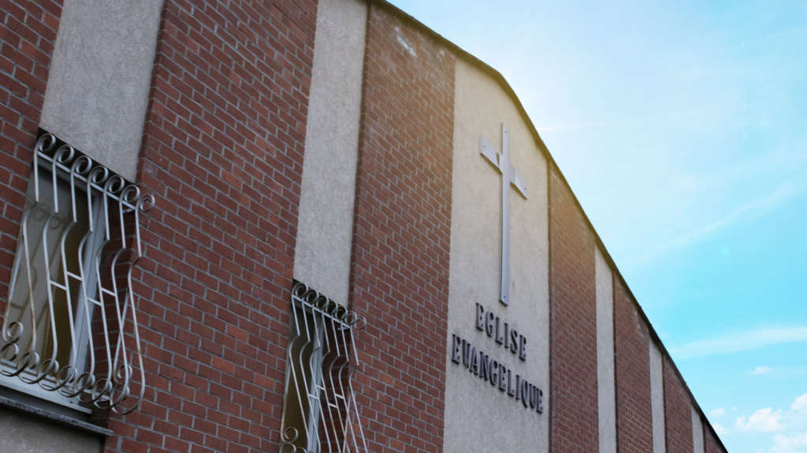

Notre église
Tout au long de ces années, l'Église Évangélique de Valenciennes n'a cessé de croître et de lever des ministères qui exercent encore aujourd'hui dans d'autres régions de France.
-
1936
Un couple part en vacances aux Andelys, chez des amis, et assiste à des réunions évangéliques. De retour chez eux, ils en parlent à leurs voisins et prennent contact avec le pasteur Falq, qui assurait des réunions à Lille.
-
1940
Ove Falq commence à animer des réunions au n° 1 de la rue Louis Bracq, à Valenciennes.
-
1941
Une année plus tard, l'église déménage rue Malplaquet.
-
1960
Avec le pasteur Marcel Valot, l'église déménage au 73 rue Saint-Géry.
-
1973
Le pasteur Marcel Goffin lui succède.
-
Plus tard
Sous le pastorat de Bernard Vinckevleugel, l'église déménage et tient sa première assemblée générale à l'adresse qu'elle occupe aujourd'hui, au 75 rue du Chauffour. Les pasteurs Patrice Robin, Elias Dos Reis Silva et Laurent Demol se succèdent ensuite à la présidence et à la conduite de l'Église.
-
Aujourd'hui
Le couple pastoral, Nicolas et Mélanie Tessier, a la responsabilité pastorale de l'Église.
Découvrir le couple pastoral
Nos partenaires
L'Église Évangélique de Valenciennes est rattachée au mouvement des Assemblées de Dieu de France. Nous sommes également affiliés au Conseil National des Évangéliques de France, reconnu par le ministère de l'Intérieur.

Nous voulons aider chaque personne à grandir dans sa relation personnelle avec Jésus.